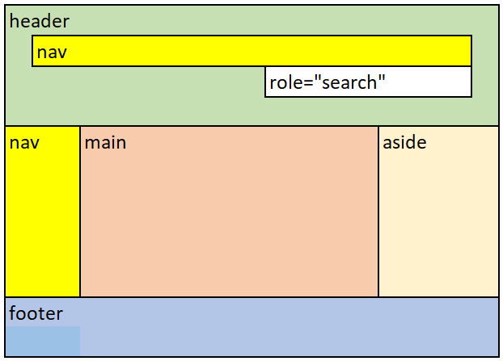

Points de repère
Conception utilisant les points de repère
Les points de repère, également appelés « régions de page », permettent aux utilisateurs du lecteur d’écran de repérer les sections importantes d’une page Web et de naviguer directement vers celles-ci en omettant des blocs de contenu. Lorsque vous introduisez des points de repère, assurez-vous que tout le contenu de la page est inclus dans un point de repère, car il est facile de manquer du contenu à l’extérieur d’un point de repère.
Identifiez les régions de la page avec des éléments de section HTML5 ou des attributs de rôle de points de repère ARIA.
| Élément de section HTML5 | Rôles de points de repère ARIA | Région |
|---|---|---|
<header> lorsqu’enfant de <body>
|
role="banner"
|
En-tête – région du haut de chaque page qui contient des renseignements comme le logo et les options de recherche et de navigation. |
<footer>
|
role="contentinfo"
|
Pied de page – partie inférieure de chaque page qui contient des renseignements relatifs aux droits d’auteur ou à la protection des renseignements personnels, ou les avis de non-responsabilité. |
<main>
|
role="main"
|
Contenu principal – région du contenu principal d’une page. |
<nav>
|
role="navigation"
|
Menu de navigation |
<aside>
|
role="complementary"
|
Contenu complémentaire – régions qui appuient le contenu principal et qui sont distinctes et importantes, comme une note expliquant le contenu principal. |
| n/a |
role="search"
|
Recherche – région qui contient un ensemble d’éléments et d’objets qui, dans leur ensemble, se combinent pour créer une fonction de recherche. |
<form>
|
role="form"
|
Formulaire – une région qui contient une collection d’éléments et d’objets qui, dans leur ensemble, se combinent pour créer un formulaire. |
<section>
|
role="region"
|
L’élément représente une section indépendante d’un document qui n’a pas un élément sémantique plus spécifique pour le représenter. Les sections doivent toujours avoir des entêtes, sauf dans quelques exceptions. |
Bon exemple : Points de repère communs
Dans cet exemple, les éléments de section HTML5 définissent les points de repère, pour la plupart. L’attribut role="search" est unique et descriptif.
L'exemple commence
L'exemple finit
HTML
Début du code
<header>
<nav aria-label="global">[…]</nav>
<form role="search">[…]</form>
</header>
<div>
<nav aria-label="principal">[…]</nav>
<main>[…]</main>
<aside>[…]</aside>
</div>
<footer>[…]</footer>
Fin du code
Ci-dessous, le balisage HTML utilise des attributs de rôle de point de repère ARIA pour identifier les régions.
HTML
Début du code
<div role="banner">
<div role="navigation" aria-label="global">[…]</div>
<form role="search">[…]</form>
</div>
<div>
<div role="navigation" aria-label="principal">[…]</div>
<div role="main">[…]</div>
<div role="complementary">[…]</div>
</div>
<div role="contentinfo">[…]</div>
Fin du code
Pratiques exemplaires pour les points de repère
- S’assurer que tout le contenu de la page se trouve dans un point de repère.
- Utiliser les éléments de section HTML5 (de préférence) pour identifier les régions sur une page. Utiliser des attributs de rôle de point de repère ARIA si c’est impossible d’utiliser des éléments de section HTML5.
- S’assurer de la présence d’un seul cas de :
<header>comme enfant de<body>, ourole="banner". Un<header>n’est pas considéré comme une bannière lorsqu’il s’agit de l’enfant de<article>,<aside>,<main>,<nav>ou<section>.-
<footer> <main>
- S’assurer que ces points de repère sont des enfants directs de
<body>:<header>(quand il s’agit de la bannière)<footer><main>
- Limiter l’utilisation de
<nav>aux navigations primaires et secondaires.- Utiliser
aria-labelouaria-labelledbypour différencier plusieurs éléments<nav>. - Utiliser
aria-labelledbyl’attribut pour étiqueter une<nav>région qui commence par un élément d’en-tête. - Fournir des étiquettes courtes et descriptives.
- Utiliser
- Le rôle du point de repère est énoncé par un lecteur d’écran avec le nom, le cas échéant. Ne pas utiliser le rôle de point de repère (p. ex., « navigation ») dans le nom; par exemple, l’étiquette est « site » et non « navigation du site » pour un point de repère de navigation.
- Utiliser
role="search"plutôt querole="form"lorsque le formulaire est utilisé pour la fonction de recherche. - Si un élément
<form>est nommé (utilisantaria-label,aria-labelledbyou untitleattribut), il sera désigné comme point de repère. - Si vous utilisez
role="form", fournissez un nom bref (utilisantaria-label,aria-labelledbyou untitleattribut) qui décrit l’objectif du formulaire. - Si un élément
<section>est nommé (utilisantaria-label,aria-labelledbyou untitleattribut), il sera designé comme point de repère. - Si vous utilisez
role="region", fournissez un nom bref (utilisantaria-label,aria-labelledbyou untitleattribut) qui décrit l’objectif du contenu dans la région.
Ressources WCAG connexes
Ressources WCAG connexes
Critères de succès
Techniques
- ARIA11 : Utiliser des repères ARIA pour identifier les zones d’une page (en anglais)
- ARIA6 : Utiliser aria-label pour attribuer des étiquettes aux objets (en anglais)
- ARIA13 : Utiliser aria-labelledby pour désigner des zones et des repères (en anglais)